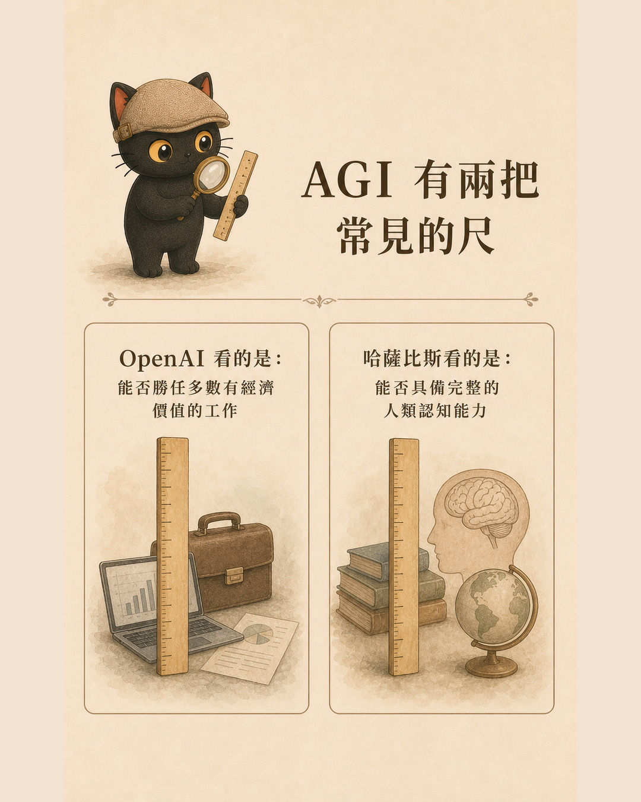
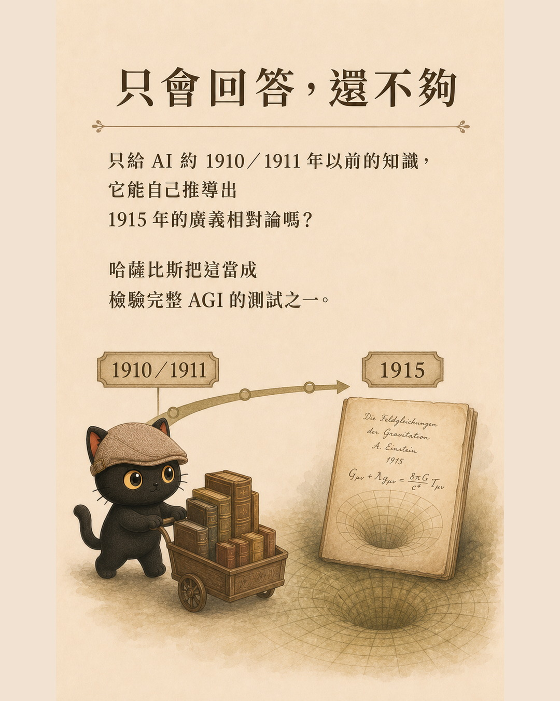
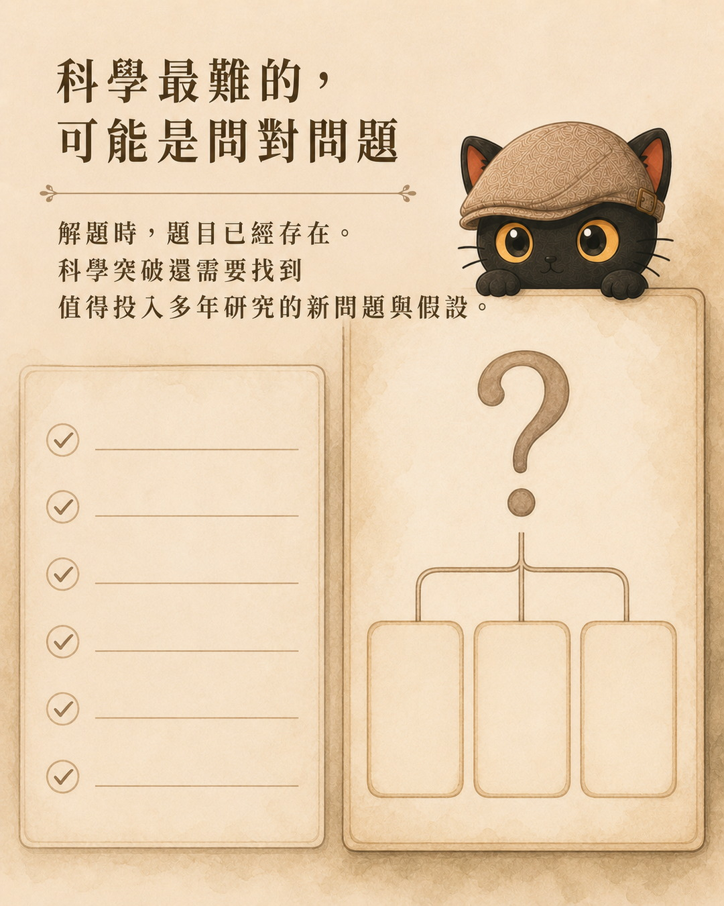
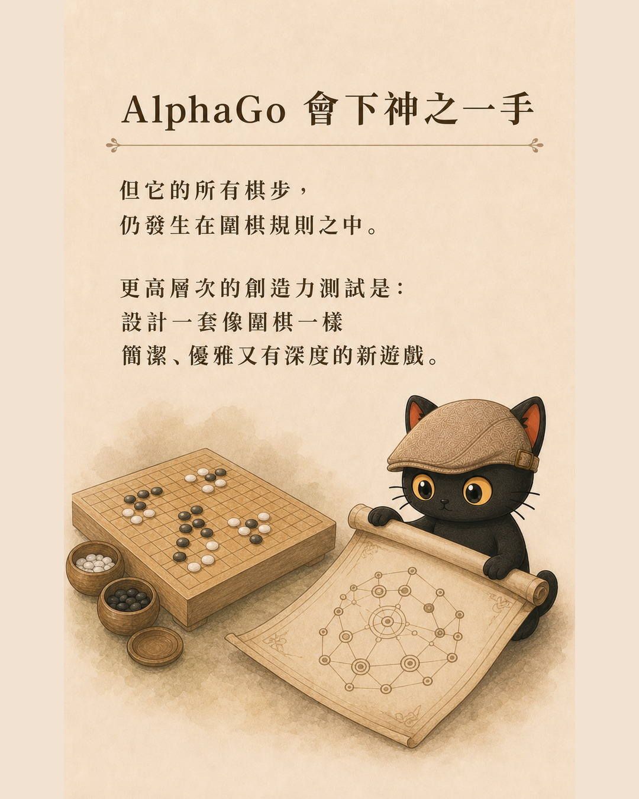
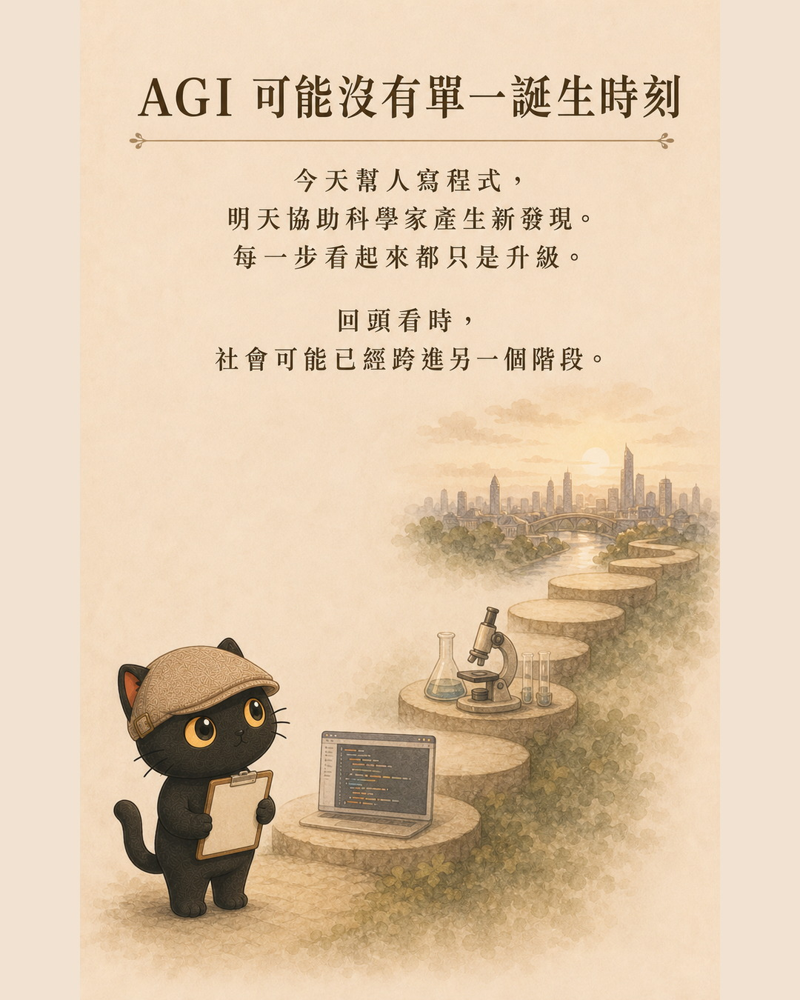

速讀
現在的 AI 已經能寫程式、整理資料、操作軟體，也能在不少專業測驗拿高分。我的起點仍很保守：我會把現在的語言模型看成一台非常厲害的「詞語關聯計算機」。在我目前的使用經驗裡，它大多沿著我給的問題、資料與能力往外延伸。真正巨大的突破，是它能主動補上我的弱項，用更高、更全面的視野指出我自己看不到的深層盲點。
- 看見 AI 每週都有新能力，想知道離 AGI 到底多遠的人
- 在工作上導入 AI，需要判斷能力邊界與驗收方式的人
- 不想只跟著排行榜，希望建立自己判讀框架的人
- 聊天 AI 會回話，Agent 會做事，AGI 進一步追問能力是否通用
- 我的 AGI 想像，是 AI 從延伸我的能力，走到能主動補上弱項與提醒深層盲點
- 有沒有主觀意識、能不能發現全新問題，是再往後一層的想像
一、我的起點：現在的 AI 像一台很厲害的詞語關聯計算機
我現在會把 AI 分成三個階段來理解。
根據學過的語言與上下文關係，一步一步產生回覆。
語言模型接上搜尋、程式、檔案、瀏覽器與記憶等工具，開始拆任務並採取行動。
進一步追問它能否跨領域學習、遷移、規劃與自主解決各種問題。
OpenAI 在介紹 GPT-3 訓練方式時寫得很直接：模型先在大量網路文字上學習預測下一個詞。GPT-4 技術報告也把底層訓練描述為預測文件中的下一個 token。token 可以是一個字、詞的一部分或其他文字單位。
所以我常用「詞語關聯計算機」來形容它。這是一個幫助理解的比喻，不是完整的技術定義。它想說的是，模型很擅長計算哪些文字、概念與上下文容易一起出現，再一步一步產生下一個 token。
而且，下一個 token 預測也沒有字面上看起來那麼簡單。Google DeepMind 的語言結構研究指出，語言具有跨尺度與長距離的關聯，從詞、子句一路延伸到更大的上下文與意圖。因此，模型雖然以預測下一個 token 為訓練核心，仍可能從這個過程學到多層次的語言結構。這也是它看起來遠比查字典或接龍複雜的原因。
到了 Agent 階段，語言模型接上工具後開始真的做事。我會把它叫做「會做事的 AI」。它能完成工作的範圍大幅增加，但工具使用本身不能證明它有主觀意識。
AGI 通常在談能力有多通用，意識則在談系統有沒有主觀經驗。2023 年一份由意識科學與 AI 研究者共同撰寫的報告，依多種神經科學理論建立指標，分析傾向認為當時的 AI 系統沒有意識；報告同時提醒，未來系統並沒有明顯、已知的技術障礙永遠無法符合這些指標。
因此，我目前不會因為 AI 說話很像人、會描述情緒，或 Agent 能自己操作工具，就把它當成已有智能或意識的證據。這是我現階段的判讀，也是我把聊天 AI、Agent 與 AGI 分開的原因。
我的 AGI 想像：從延伸我的能力，到補上我的弱項
我目前用 AI 的感覺是，我講什麼，它就沿著我講的東西繼續延伸。只要我問得夠清楚、給的資料夠完整，它可以幫我整理、組合、執行，甚至把我的能力放大很多倍。
可是對於我自己真的沒有看見的盲點，尤其是很深、連我都不知道該怎麼問的盲點，它目前還比較難主動提醒我。
這也是我對 AGI 最直接的想像。哪一天，AI 不只延伸我已經會的東西，還能主動看見我能力之外的缺口；它知道我的弱項在哪裡，能用更高、更全面的視野提醒我，甚至提出一個我原本完全沒想到要問的角度，我會覺得這是一個非常大的突破。
對我來說，這個門檻已經很高了。AI 有沒有自己的意識，或能不能像科學家一樣發現全新的問題，是再往後一層的想像，已經超出我現在能具體描繪的範圍。
業界最接近的說法：人機互補
研究領域裡，和這個想像最接近的概念叫做人機互補。它追求的結果，是人與 AI 合作後的表現，超過人或 AI 任何一方單獨工作的表現。
2024 年一篇整理人機互補理論與證據的研究指出，互補表現目前仍很少穩定出現。研究把互補的來源分成兩類：資訊不對稱與能力不對稱。白話來說，AI 必須看見一些人沒有看見的資訊，或擁有人缺少的能力，合作才有機會真的補上彼此。
Microsoft Research 研究人與 AI 的盲點時，也把問題放在雙方各自會漏掉什麼，以及何時應該把控制權交給另一方。這些研究還沒有證明現有語言模型能穩定發現一個人的深層盲點，但它們至少提供一個業界可研究的方向：AI 的價值可以從放大人類已知能力，往辨認差異、補位與適時提醒推進。
Microsoft Research 在 2026 年也提出一種相近觀點，把現代 AI 理解為人類智能的延伸。這和我目前的使用感受很接近：AI 依賴人類已經寫下的語言、概念與判斷結構，所以很會把人的能力往外放大。我期待的下一步，是它開始穩定補上我看不見的那一塊。
二、大家說的 AGI，可能不是同一件事
AGI 是 Artificial General Intelligence，中文常譯為通用人工智慧。問題出在「通用」和「智慧」都不是一個簡單分數。
OpenAI Charter 將 AGI 描述為高度自主的系統，能在大多數有經濟價值的工作上勝過人類。這個定義很適合拿來問工作世界的變化：一個系統能否自己規劃、使用工具、處理跨領域任務，並穩定產出結果。
Google DeepMind 的 Levels of AGI 則把能力表現、通用程度與自主性拆開。這樣就不會把某項單點能力很強，直接當成整體通用智慧很高。

三、第一把尺：AI 能做多少工作，而且能多自主
這把尺看的是可執行能力。今天的 AI 不只回答問題，也開始能拆任務、讀檔案、呼叫工具、操作瀏覽器、寫程式與檢查結果。當這些能力連成工作流，AI 的角色就從單次回覆，往可交辦的執行者移動。
但「會做」仍有很多層次。它可能只在示範情境成功，也可能要人類不斷補提示；可能能完成十分鐘任務，卻無法可靠跑完兩天的專案；可能在熟悉格式表現很好，換一個環境就失去判斷力。
能跨多少領域與任務，而不只是單項測驗。
需要多少人工介入，能否自己規劃、檢查與修正。
換到真實環境後，結果能不能可靠重現。
四、第二把尺：AI 能不能提出值得研究的新問題
Demis Hassabis 在 TIME 訪談中，用愛因斯坦作為思想實驗。他問的是：如果把二十世紀初人類已知的資訊交給 AI，它能不能走出廣義相對論這類新的理論？
這個測試關心的，不只是一道很難的題目能不能解開。題目本身通常已由人類界定，評分方式也已存在。更高一層的問題是：AI 能不能察覺現有解釋的缺口，提出值得追問的新猜想，再設計方法讓人類檢驗？
題目與評分標準都已存在。
框架不變，但路徑超出人類慣例。
指出舊解釋的缺口，形成可驗證的新假設。

五、AlphaGo 的第 37 手，算創造新知嗎
AlphaGo 對李世乭的第二局，第 37 手曾被形容為極不尋常。Google DeepMind 的 AlphaGo 官方頁指出，當時估計人類棋手走出那一手的機率約為萬分之一，它也啟發棋手重新思考圍棋策略。
這可以算創造力，但它發生在清楚的邊界裡：棋盤、規則、勝負條件都已存在。AI 找到的是規則內的新策略。
DeepMind 在 AlphaGo 十年回顧裡，用更高的門檻談原創發明：如果系統能設計出一個像圍棋一樣深、有美感、值得人類長期投入的新遊戲，才更接近創造新框架。
棋盤與目標已存在，AI 找到人類沒想到的新策略。
連問題空間、規則與值得追求的目標都一起建立。

六、AGI 可能沒有單一生日
Google DeepMind 2026 年的 From AGI to ASI 提出一個值得留意的方向：從目前系統走向 AGI，再往更高能力發展，可能是一連串轉變，不一定只有一個清楚的跨越點。
AI 的語言、程式、科學推理、工具使用與長程自主能力，可能在不同時間進步。某些工作先受到大幅影響，另一些需要現場感知、責任承擔或長期信任的工作，變化速度不同。
因此，問「AGI 哪一天到」很容易讓討論只剩日期預測。更實用的問法是：哪一種能力已跨過可用門檻？哪一種仍需要人類補位？一旦失敗，誰負責發現與承擔？

七、我會用五個問題判斷新的 AI 展示
看到一個模型宣稱又突破時，我會先把展示拆成五題：
- 廣度：它只在一項測試很強，還是能跨領域處理不同任務？
- 自主性：它能自己規劃、使用工具、檢查與修正多久？中間需要人類救援幾次？
- 新穎性：它是在重組已知答案、找到規則內新路徑，還是提出新的可驗證假設？
- 遷移能力：換到沒看過的資料、工具或環境，它還能保留原本的判斷嗎？
- 可驗證性與責任：結果能不能被人類檢查？錯誤會造成什麼代價？最後由誰決定採用？
這五題不會替世界定義 AGI，但能幫我們把驚人的展示拆成可判讀的能力，也能直接拿來規劃工作上的 AI 導入。

結語：真正要看的，是 AI 怎麼形成問題
AI 能完成愈來愈多工作，已經足以改變我們分工、學習與組織知識的方式。這一點不用等 AGI 才開始。
同時，如果要談更完整的通用智慧，我們還需要觀察另一件事：AI 能不能從不完整的世界裡發現缺口，提出有價值、可驗證的新問題，並讓人類的知識真的往前走。
我的判讀是，未來幾年最值得追的，不只包括模型又贏了哪一場測驗，也包括它能不能把未知變成一個可研究的問題。前者讓 AI 更像能做事的助手，後者會逼我們重新思考智慧與創造的邊界。
資料來源
- OpenAI Charter
- OpenAI：Aligning language models to follow instructions
- OpenAI：GPT-4 Technical Report
- Google DeepMind：Fractal Patterns May Unravel the Intelligence in Next-Token Prediction
- Butlin 等人：Consciousness in Artificial Intelligence
- Hemmer 等人：Complementarity in Human-AI Collaboration
- Microsoft Research：Overcoming Blind Spots in the Real World
- Microsoft Research：Extending Human Intelligence Through AI
- Google DeepMind：Levels of AGI
- TIME：Demis Hassabis interview
- Google DeepMind：AlphaGo at 10
- Google DeepMind：From AGI to ASI
- 原始短片